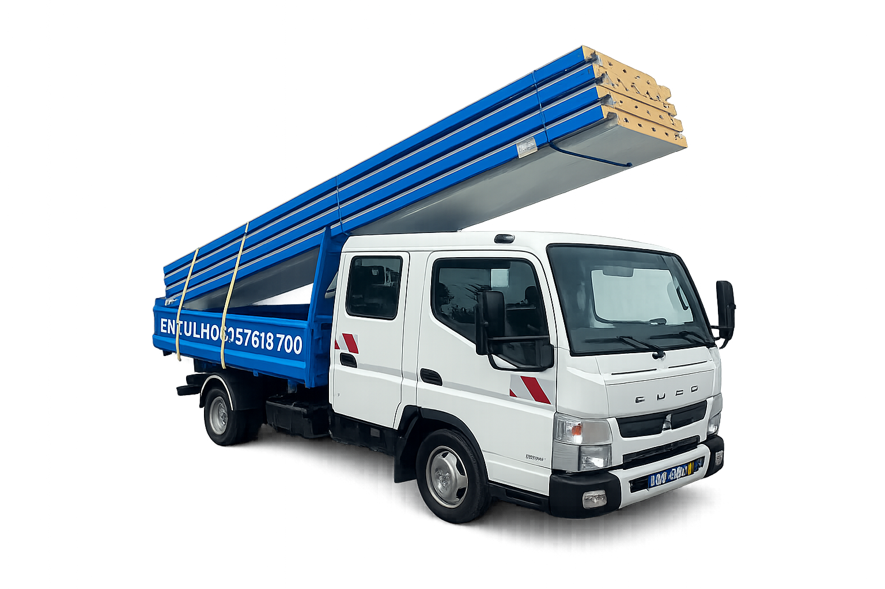
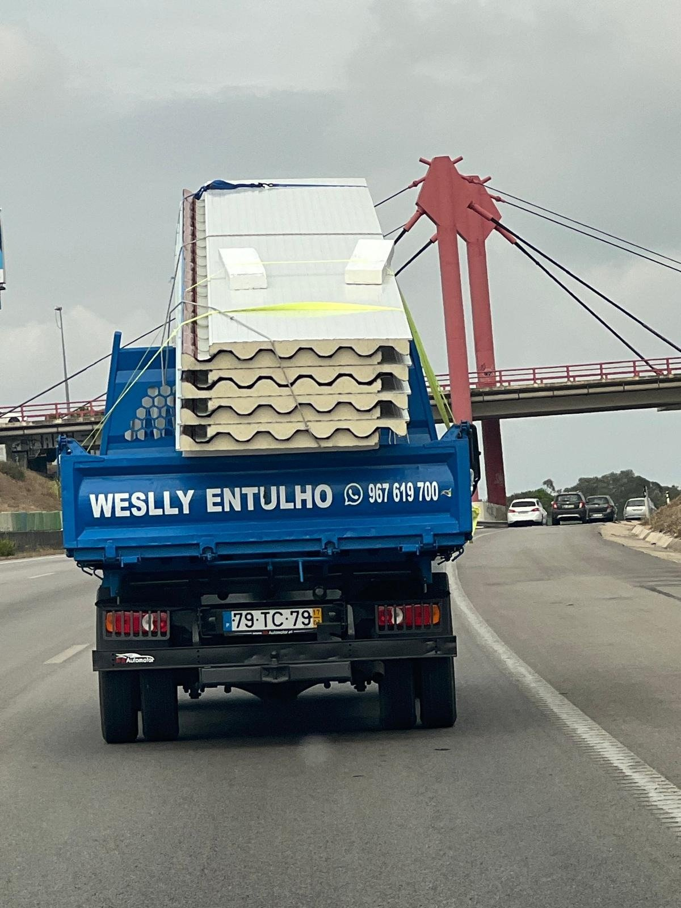
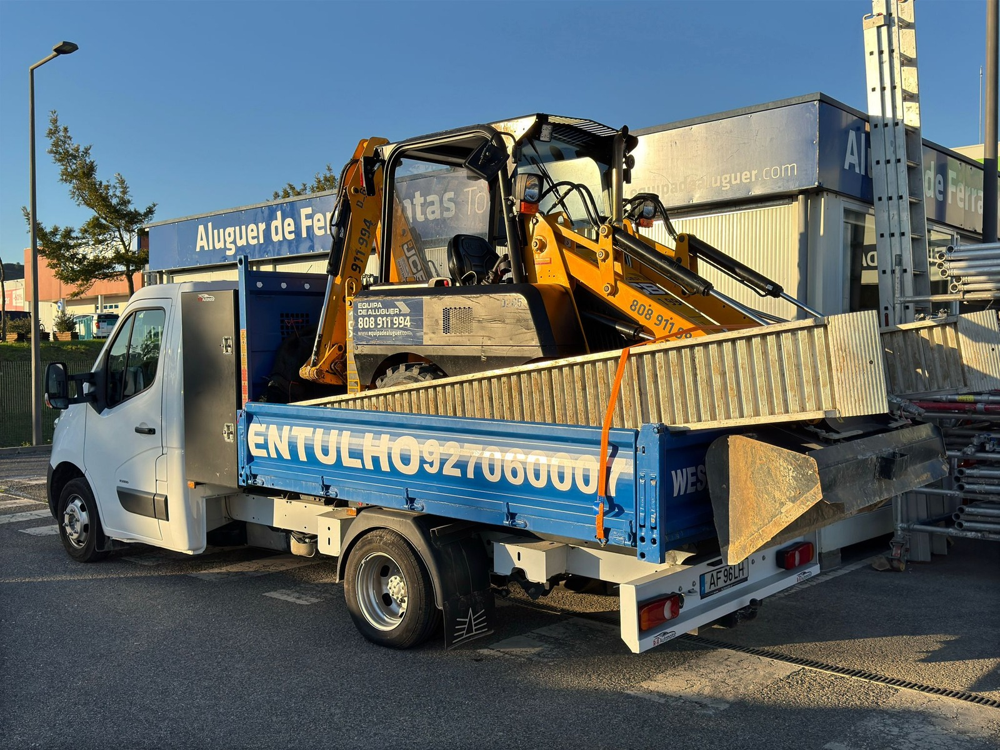

REMODELAÇÃO E RECOLHA DE ENTULHO/RESÍDUO COM RÁPIDO ATENDIMENTO EM LISBOA.
Retiramos entulho, madeiras e resíduos de obra com rapidez, segurança e resposta profissional para clientes particulares, obras e remodela��es em Lisboa.
MOTIVOS PARA CONTRATAR AGORA A SUA RECOLHA DE ENTULHO
Se estava a procurar um serviço rápido e profissional para recolha de entulho, madeiras, limpeza de terrenos e apoio à obra, fale com quem entende do assunto.
Vantagens Para Você
Serviços essenciais para limpar, organizar e fazer a obra avançar
Utilizamos as informações do site original da empresa e reorganizamos tudo num formato mais direto, comercial e fácil de perceber.
Recolha de entulhos
Removemos resíduos de obra com agilidade para libertar o espaço e manter a frente de trabalho organizada.
Recolha de madeiras
Recolha de madeiras e materiais volumosos com transporte rápido e operação adaptada a acessos dif�ceis.
Escavações
Serviço de escavação com apoio técnico, segurança operacional e foco em produtividade no terreno.
Terraplanagem com escavadora
Nivelamos e preparamos o terreno para deixar a obra pronta para avançar com segurança e eficiência.
Limpeza de terrenos
Limpeza completa de lotes e Áreas exteriores para valorizar o espaço e acelerar o início do trabalho.
Remodelações
Apoiamos remodela��es com equipa dedicada para executar o serviço com qualidade e ritmo profissional.
Pinturas
Pinturas interiores e exteriores com acabamento limpo, apresentação cuidada e execução eficiente.

SERVIÇO PROFISSIONAL DE RECOLHA DE ENTULHOS, MADEIRAS E APOIO À OBRA EM LISBOA.
A Weslly Remodelações e Entulhos trabalha com foco em rapidez, organização do espaço, segurança no serviço e resposta prática para clientes particulares e empresas.
R. do Emb. 55, 1300-217 Lisboa
Trabalhos Reais
Imagens reais do serviço executado
As fotos abaixo vêm do site original da empresa e ajudam a mostrar o tipo de serviço realizado no dia a dia.

Recolha de entulho com camião em Lisboa
Serviço de remo��o de resíduos de constru��o
Limpeza e transporte de entulhos

Terreno preparado para limpeza e terraplanagem

Entulho recolhido em ambiente urbano

Equipa a realizar recolha e apoio a obra
AINDA EST� COM DÚVIDAS?
Não perca tempo e veja a empresa em ação. O vídeo ajuda a perceber melhor o tipo de trabalho e a forma como a equipa atua no terreno.
Perguntas Frequentes
Tire as suas dúvidas
Que serviços a empresa realiza?
Recolha de entulhos, recolha de madeiras, escavações, terraplanagem com escavadora, limpeza de terrenos, remodela��es e pinturas.
A empresa atende em que zona?
O atendimento � feito em Lisboa e região metropolitana, conforme indicado no conteúdo original da empresa.
A empresa faz recolha em locais de acesso mais difácil?
Sim. Um dos diferenciais comunicados � o uso de dois camiões pequenos para facilitar o acesso.
Os resíduos são descartados de forma adequada?
Sim. A empresa destaca a dispensa em lugares adequados e o encaminhamento responsável dos resíduos.
Fale com a equipa e pe�a o seu orçamento
Atendimento para recolha de entulhos, madeiras, limpeza de terrenos, escavações, terraplanagem, remodela��es e pinturas.
Telefone
+351 927 060 007
+351 927 060 007
Área de serviço
Lisboa e região metropolitana
R. do Emb. 55, 1300-217 Lisboa